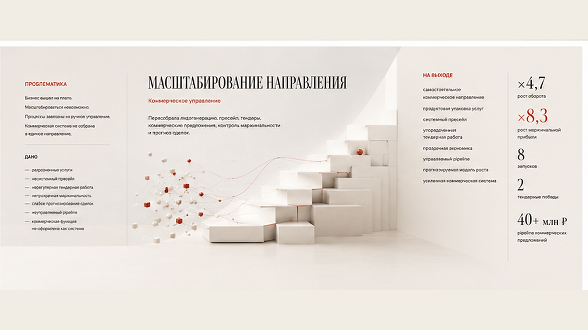

Алина Васильева
Стратегический партнёр
Строю стратегии, коммерческие системы
и команды, которые превращают развитие
в измеримый рост.
Рост выручки
и автоматизация
Операционное управление
Объединила продажи, проекты,
финансы, аналитику и KPI в единую
управленческую систему.
Проблематика: бизнес вышел на плато,
масштабироваться невозможно,
процессы выстроены вокруг CEO.

Дано
- нет управленческой отчётности
- размыта ответственность
- не определены качественные
показатели продукта
На выходе
- единый управленческий контур
- сильный топ-менеджмент
- автоматизация
Проблематика
Бизнес вышел на плато.
Масштабирование невозможно.
Процессы зависели от ручного управления.
Коммерческий контур не собран
в единое направление.
Дано
- разрозненные услуги
- невыстроенный пресейл
- нерегулярная тендерная работа
- непрозрачная маржинальность
- слабое прогнозирование сделок
- неуправляемый pipeline
Масштабирование направления
Коммерческое управление
Пересобрала лидогенерацию, пресейл, тендеры,
коммерческие предложения, контроль маржинальности
и прогноз сделок.

На выходе
- самостоятельное коммерческое направление
- продуктовая упаковка услуг
- системный пресейл
- упорядоченная тендерная работа
- прозрачная экономика
- управляемый pipeline
- прогнозируемая модель роста
Развитие
интернет-магазина
E-commerce / маркетинг / продукт
Соединила многоканальный маркетинг,
онлайн-продажи, аналитику и производство
контента для большого товарного каталога.

Проблематика
Большой ассортимент не превращался
в сопоставимый объём продаж. Контент,
маркетинг и аналитика работали разрозненно,
а пользовательский путь терял заявки
между этапами.
Дано
- 100 000+ SKU
- недостаточный объём контента
- разрозненные каналы
- потери на пути пользователя
- низкая конверсия
На выходе
- единая система контента
- связка маркетинга и каталога
- непрерывная аналитика
- сокращённый путь к заявке
- управляемая конверсия
Запуск нового
бизнес-юнита
Новый продукт / партнёрская модель
Создала продукт, партнёрские каналы
и повторяемую коммерческую модель
без зависимости от постоянного
рекламного бюджета.
Проблематика
Экспертиза не была оформлена
в самостоятельный продукт.
Привлечение зависело
от отдельных действий и рекламы.
Не существовало повторяемой
коммерческой модели.
Дано
- экспертиза без продукта
- несистемные партнёрские связи
- нестабильный поток обращений
- зависимость от рекламы
- отсутствие собственной экономики
для рынка
возможностей
коммерческий цикл
и предсказуемая
Бизнес-юнит
автономная коммерческая система
бизнес-юнита
бюджета
и прибыли
Let’s build
the next
growth system.
Давайте создадим следующую систему роста.
Стратегия, коммерческая система,
команды и измеримый рост.
Москва / Санкт-Петербург
Гибридный формат работы